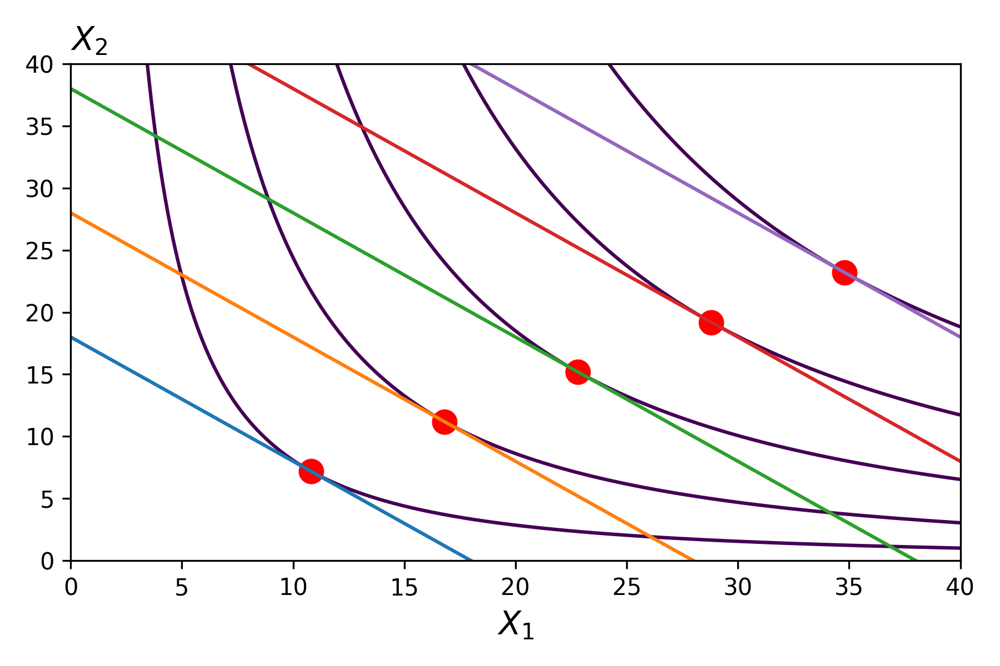
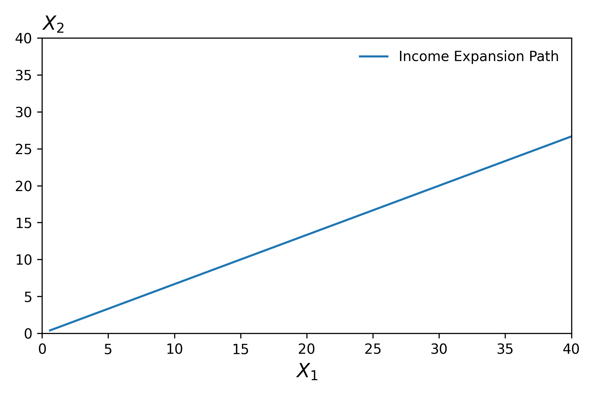
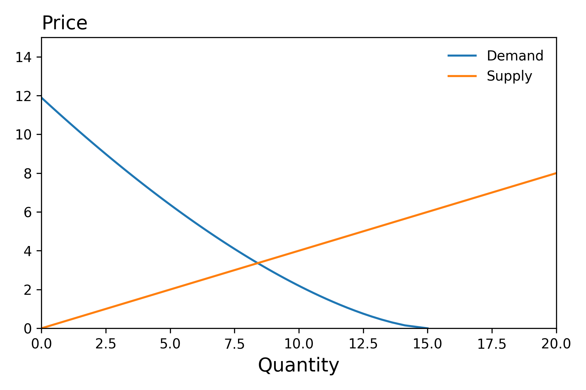
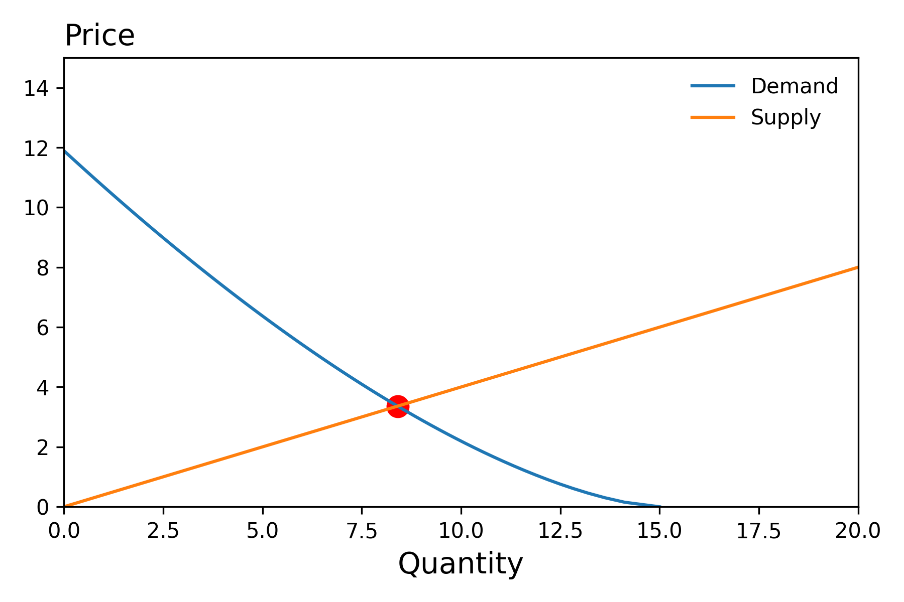

Comparative Statics
Notebooks
| Description | Notebook | Status |
|---|---|---|
| Income Expansion Path | Work In Progress | |
| Equilibrium With Taxes | Work In Progress |
Introduction
Individual Level
Once we have a model, such as consumer demand, it's natural to use the model to think about how certain factors affect demand. This exercise is referred to as comparative statics. We change a parameter, such as income, and we want to understand how demand changes.
Below we highlight how the optimal choice problem changes as we increase income.

This relationship is an implicit function whose graph we depict below.

Market Level
Given supply and demand functions (S, D), whose graphs we depict below,

Solving For Equilibrium
we can solve for the equilibrium price and quantity by solving the following system of equations (4 equations and 4 unknowns). Note, we distinguish between the price that consumers pay, \(p_d\), and the price that suppliers receive, \(p_s\).

We can solve the above system of equations by (1) constructing a vector valued function \(F\) and then (2) using a solver to find the root of this function:
Incorporating Taxes
With this set-up, we can then solve for the new equilibrium under a quantity tax (\(p_d = p_s + \text{tax})\), value tax \(p_d = (1 + \text{tax})p_s\), by re-writing the final equation with the new relationship in place. Indeed it is then possible the explore how the equilibrium quantity varies with the tax, \(q^*(\text{tax})\), by calling solver on multiple versions of the problem in parallel.

Who Pays the Tax?
See the problem set.
Deadweight Loss
As the above figure highlights, as we increase the tax, the equilibrium quantity falls which gives rise to a deadweight loss (forgone gains from exchange. We can determine how the deadweight loss varies as a function of the tax via the following function)